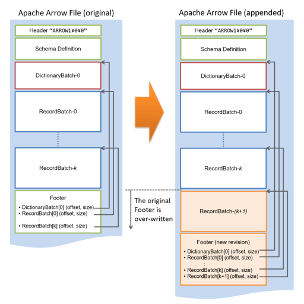

列指向データストア (Arrow_Fdw)
概要
PostgreSQLのテーブルは内部的に8KBのブロック1と呼ばれる単位で編成され、ブロックは全ての属性及びメタデータを含むタプルと呼ばれるデータ構造を行単位で格納します。行を構成するデータが近傍に存在するため、これはINSERTやUPDATEの多いワークロードに有効ですが、一方で大量データの集計・解析ワークロードには不向きであるとされています。
通常、大量データの集計においてはテーブル内の全ての列を参照する事は珍しく、多くの場合には一部の列だけを参照するといった処理になりがちです。この場合、実際には参照されない列のデータをストレージからロードするために消費されるI/Oの帯域は全く無駄ですが、行単位で編成されたデータに対して特定の列だけを取り出すという操作は困難です。
逆に列単位でデータを編成した場合、INSERTやUPDATEの多いワークロードに対しては極端に不利ですが、大量データの集計・解析を行う際には被参照列だけをストレージからロードする事が可能になるため、I/Oの帯域を最大限に活用する事が可能です。 またプロセッサの処理効率の観点からも、列単位に編成されたデータは単純な配列であるかのように見えるため、GPUにとってはCoalesced Memory Accessというメモリバスの性能を最大限に引き出すアクセスパターンとなる事が期待できます。

Apache Arrowとは
Apache Arrowとは、構造化データを列形式で記録、交換するためのデータフォーマットです。 主にビッグデータ処理のためのアプリケーションソフトウェアが対応しているほか、CやC++、Pythonなどプログラミング言語向けのライブラリが整備されているため、自作のアプリケーションからApache Arrow形式を扱うよう設計する事も容易です。

Apache Arrow形式ファイルの内部には、データ構造を定義するスキーマ（Schema）部分と、スキーマに基づいて列データを記録する1個以上のレコードバッチ（RecordBatch）部分が存在します。データ型としては、整数や文字列（可変長）、日付時刻型などに対応しており、個々の列データはこれらデータ型に応じた内部表現を持っています。
Apache Arrow形式におけるデータ表現は、必ずしも全ての場合でPostgreSQLのデータ表現と一致している訳ではありません。例えば、Arrow形式ではタイムスタンプ型のエポックは1970-01-01で複数の精度を持つ事ができますが、PostgreSQLのエポックは2001-01-01でマイクロ秒の精度を持ちます。
Arrow_Fdwは外部テーブルを用いてApache Arrow形式ファイルをPostgreSQL上で読み出す事を可能にします。例えば、列ごとに100万件の列データが存在するレコードバッチを8個内包するArrow形式ファイルをArrow_Fdwを用いてマップした場合、この外部テーブルを介してArrowファイル上の800万件のデータへアクセスする事ができるようになります。
運用
外部テーブルの定義
通常、外部テーブルを作成するには以下の3ステップが必要です。
CREATE FOREIGN DATA WRAPPERコマンドにより外部データラッパを定義するCREATE SERVERコマンドにより外部サーバを定義するCREATE FOREIGN TABLEコマンドにより外部テーブルを定義する
このうち、最初の2ステップはCREATE EXTENSION pg_stromコマンドの実行に含まれており、個別に実行が必要なのは最後のCREATE FOREIGN TABLEのみです。
CREATE FOREIGN TABLE flogdata (
ts timestamp,
sensor_id int,
signal1 smallint,
signal2 smallint,
signal3 smallint,
signal4 smallint,
) SERVER arrow_fdw
OPTIONS (file '/path/to/logdata.arrow');
CREATE FOREIGN TABLE構文で指定した列のデータ型は、マップするArrow形式ファイルのスキーマ定義と厳密に一致している必要があります。
これ以外にも、Arrow_FdwはIMPORT FOREIGN SCHEMA構文を用いた便利な方法に対応しています。これは、Arrow形式ファイルの持つスキーマ情報を利用して、自動的にテーブル定義を生成するというものです。 以下のように、外部テーブル名とインポート先のスキーマ、およびOPTION句でArrow形式ファイルのパスを指定します。 Arrowファイルのスキーマ定義には、列ごとのデータ型と列名（オプション）が含まれており、これを用いて外部テーブルの定義を行います。
IMPORT FOREIGN SCHEMA flogdata
FROM SERVER arrow_fdw
INTO public
OPTIONS (file '/path/to/logdata.arrow');
外部テーブルオプション
Arrow_Fdwは以下のオプションに対応しています。現状、全てのオプションは外部テーブルに対して指定するものです。
| 対象 | オプション | 説明 |
|---|---|---|
| 外部テーブル | file |
外部テーブルにマップするArrowファイルを1個指定します。 |
| 外部テーブル | files |
外部テーブルにマップするArrowファイルをカンマ(,）区切りで複数指定します。 |
| 外部テーブル | dir |
指定したディレクトリに格納されている全てのファイルを外部テーブルにマップします。 |
| 外部テーブル | suffix |
dirオプションの指定時、例えば.arrowなど、特定の接尾句を持つファイルだけをマップします。 |
| 外部テーブル | parallel_workers |
この外部テーブルの並列スキャンに使用する並列ワーカープロセスの数を指定します。一般的なテーブルにおけるparallel_workersストレージパラメータと同等の意味を持ちます。 |
| 外部テーブル | writable |
この外部テーブルに対するINSERT文の実行を許可します。詳細は『書き込み可能Arrow_Fdw』の節を参照してください。 |
データ型の対応
Arrow形式のデータ型と、PostgreSQLのデータ型は以下のように対応しています。
| Arrowデータ型 | PostgreSQLデータ型 | 備考 |
|---|---|---|
Int |
int2,int4,int8 |
is_signed属性は無視。bitWidth属性は16、32または64のみ対応。 |
FloatingPoint |
float2,float4,float8 |
float2はPG-Stromによる独自拡張 |
Binary |
bytea |
|
Utf8 |
text |
|
Decimal |
numeric |
|
Date |
date |
unitsz=Day相当に補正 |
Time |
time |
unitsz=MicroSecond相当に補正 |
Timestamp |
timestamp |
unitsz=MicroSecond相当に補正 |
Interval |
interval |
|
List |
配列型 | 1次元配列のみ対応（予定） |
Struct |
複合型 | 対応する複合型を予め定義しておくこと。 |
Union |
-------- | |
FixedSizeBinary |
char(n) |
|
FixedSizeList |
-------- | |
Map |
-------- |
EXPLAIN出力の読み方
EXPLAINコマンドを用いて、Arrow形式ファイルの読み出しに関する情報を出力する事ができます。
以下の例は、約309GBの大きさを持つArrow形式ファイルをマップしたflineorder外部テーブルを含むクエリ実行計画の出力です。
=# EXPLAIN
SELECT sum(lo_extendedprice*lo_discount) as revenue
FROM flineorder,date1
WHERE lo_orderdate = d_datekey
AND d_year = 1993
AND lo_discount between 1 and 3
AND lo_quantity < 25;
QUERY PLAN
-----------------------------------------------------------------------------------------------------
Aggregate (cost=12632759.02..12632759.03 rows=1 width=32)
-> Custom Scan (GpuPreAgg) (cost=12632754.43..12632757.49 rows=204 width=8)
Reduction: NoGroup
Combined GpuJoin: enabled
GPU Preference: GPU0 (Tesla V100-PCIE-16GB)
-> Custom Scan (GpuJoin) on flineorder (cost=9952.15..12638126.98 rows=572635 width=12)
Outer Scan: flineorder (cost=9877.70..12649677.69 rows=4010017 width=16)
Outer Scan Filter: ((lo_discount >= 1) AND (lo_discount <= 3) AND (lo_quantity < 25))
Depth 1: GpuHashJoin (nrows 4010017...572635)
HashKeys: flineorder.lo_orderdate
JoinQuals: (flineorder.lo_orderdate = date1.d_datekey)
KDS-Hash (size: 66.06KB)
GPU Preference: GPU0 (Tesla V100-PCIE-16GB)
NVMe-Strom: enabled
referenced: lo_orderdate, lo_quantity, lo_extendedprice, lo_discount
files0: /opt/nvme/lineorder_s401.arrow (size: 309.23GB)
-> Seq Scan on date1 (cost=0.00..78.95 rows=365 width=4)
Filter: (d_year = 1993)
(18 rows)
これを見るとCustom Scan (GpuJoin)がflineorder外部テーブルをスキャンしている事がわかります。 file0には外部テーブルの背後にあるファイル名/opt/nvme/lineorder_s401.arrowとそのサイズが表示されます。複数のファイルがマップされている場合には、file1、file2、... と各ファイル毎に表示されます。 referencedには実際に参照されている列の一覧が列挙されており、このクエリにおいてはlo_orderdate、lo_quantity、lo_extendedpriceおよびlo_discount列が参照されている事がわかります。
また、GPU Preference: GPU0 (Tesla V100-PCIE-16GB)およびNVMe-Strom: enabledの表示がある事から、flineorderのスキャンにはSSD-to-GPUダイレクトSQL機構が用いられることが分かります。
VERBOSEオプションを付与する事で、より詳細な情報が出力されます。
=# EXPLAIN VERBOSE
SELECT sum(lo_extendedprice*lo_discount) as revenue
FROM flineorder,date1
WHERE lo_orderdate = d_datekey
AND d_year = 1993
AND lo_discount between 1 and 3
AND lo_quantity < 25;
QUERY PLAN
--------------------------------------------------------------------------------
Aggregate (cost=12632759.02..12632759.03 rows=1 width=32)
Output: sum((pgstrom.psum((flineorder.lo_extendedprice * flineorder.lo_discount))))
-> Custom Scan (GpuPreAgg) (cost=12632754.43..12632757.49 rows=204 width=8)
Output: (pgstrom.psum((flineorder.lo_extendedprice * flineorder.lo_discount)))
Reduction: NoGroup
GPU Projection: flineorder.lo_extendedprice, flineorder.lo_discount, pgstrom.psum((flineorder.lo_extendedprice * flineorder.lo_discount))
Combined GpuJoin: enabled
GPU Preference: GPU0 (Tesla V100-PCIE-16GB)
-> Custom Scan (GpuJoin) on public.flineorder (cost=9952.15..12638126.98 rows=572635 width=12)
Output: flineorder.lo_extendedprice, flineorder.lo_discount
GPU Projection: flineorder.lo_extendedprice::bigint, flineorder.lo_discount::integer
Outer Scan: public.flineorder (cost=9877.70..12649677.69 rows=4010017 width=16)
Outer Scan Filter: ((flineorder.lo_discount >= 1) AND (flineorder.lo_discount <= 3) AND (flineorder.lo_quantity < 25))
Depth 1: GpuHashJoin (nrows 4010017...572635)
HashKeys: flineorder.lo_orderdate
JoinQuals: (flineorder.lo_orderdate = date1.d_datekey)
KDS-Hash (size: 66.06KB)
GPU Preference: GPU0 (Tesla V100-PCIE-16GB)
NVMe-Strom: enabled
referenced: lo_orderdate, lo_quantity, lo_extendedprice, lo_discount
files0: /opt/nvme/lineorder_s401.arrow (size: 309.23GB)
lo_orderpriority: 33.61GB
lo_extendedprice: 17.93GB
lo_ordertotalprice: 17.93GB
lo_revenue: 17.93GB
-> Seq Scan on public.date1 (cost=0.00..78.95 rows=365 width=4)
Output: date1.d_datekey
Filter: (date1.d_year = 1993)
(28 rows)
被参照列をロードする際に読み出すべき列データの大きさを、列ごとに表示しています。 lo_orderdate、lo_quantity、lo_extendedpriceおよびlo_discount列のロードには合計で87.4GBの読み出しが必要で、これはファイルサイズ309.2GBの28.3%に相当します。
Arrowファイルの作成方法
本節では、既にPostgreSQLデータベースに格納されているデータをApache Arrow形式に変換する方法を説明します。
PyArrow+Pandas
Arrow開発者コミュニティが開発を行っている PyArrow モジュールとPandasデータフレームの組合せを用いて、PostgreSQLデータベースの内容をArrow形式ファイルへと書き出す事ができます。
以下の例は、テーブルt0に格納されたデータを全て読込み、ファイル/tmp/t0.arrowへと書き出すというものです。
import pyarrow as pa
import pandas as pd
X = pd.read_sql(sql="SELECT * FROM t0", con="postgresql://localhost/postgres")
Y = pa.Table.from_pandas(X)
f = pa.RecordBatchFileWriter('/tmp/t0.arrow', Y.schema)
f.write_table(Y,1000000) # RecordBatch for each million rows
f.close()
ただし上記の方法は、SQLを介してPostgreSQLから読み出したデータベースの内容を一度メモリに保持するため、大量の行を一度に変換する場合には注意が必要です。
Pg2Arrow
一方、PG-Strom Development Teamが開発を行っている pg2arrow コマンドを使用して、PostgreSQLデータベースの内容をArrow形式ファイルへと書き出す事ができます。 このツールは比較的大量のデータをNVME-SSDなどストレージに書き出す事を念頭に設計されており、PostgreSQLデータベースから-s|--segment-sizeオプションで指定したサイズのデータを読み出すたびに、Arrow形式のレコードバッチ（Record Batch）としてファイルに書き出します。そのため、メモリ消費量は比較的リーズナブルな値となります。
pg2arrowコマンドはPG-Stromに同梱されており、PostgreSQL関連コマンドのインストール先ディレクトリに格納されます。
$ ./pg2arrow --help
Usage:
pg2arrow [OPTION]... [DBNAME [USERNAME]]
General options:
-d, --dbname=DBNAME database name to connect to
-c, --command=COMMAND SQL command to run
-f, --file=FILENAME SQL command from file
(-c and -f are exclusive, either of them must be specified)
-o, --output=FILENAME result file in Apache Arrow format
--append=FILENAME result file to be appended
--output and --append are exclusive to use at the same time.
If neither of them are specified, it creates a temporary file.)
Arrow format options:
-s, --segment-size=SIZE size of record batch for each
(default: 256MB)
Connection options:
-h, --host=HOSTNAME database server host
-p, --port=PORT database server port
-U, --username=USERNAME database user name
-w, --no-password never prompt for password
-W, --password force password prompt
Other options:
--dump=FILENAME dump information of arrow file
--progress shows progress of the job
--set=NAME:VALUE GUC option to set before SQL execution
Report bugs to <pgstrom@heterodbcom>.
PostgreSQLへの接続パラメータはpsqlやpg_dumpと同様に、-hや-Uなどのオプションで指定します。 基本的なコマンドの使用方法は、-c|--commandオプションで指定したSQLをPostgreSQL上で実行し、その結果を-o|--outputで指定したファイルへArrow形式で書き出します。
-o|--outputオプションの代わりに--appendオプションを使用する事ができ、これは既存のApache Arrowファイルへの追記を意味します。この場合、追記されるApache Arrowファイルは指定したSQLの実行結果と完全に一致するスキーマ構造を持たねばなりません。
以下の例は、テーブルt0に格納されたデータを全て読込み、ファイル/tmp/t0.arrowへと書き出すというものです。
$ pg2arrow -U kaigai -d postgres -c "SELECT * FROM t0" -o /tmp/t0.arrow
開発者向けオプションですが、--dump <filename>でArrow形式ファイルのスキーマ定義やレコードバッチの位置とサイズを可読な形式で出力する事もできます。
--progressオプションを指定すると、処理の途中経過を表示する事が可能です。これは巨大なテーブルをApache Arrow形式に変換する際に有用です。
書き込み可能Arrow_Fdw
writableオプションを付加したArrow_Fdw外部テーブルに対しては、INSERT構文によりデータを追記する事が可能です。また、pgstrom.arrow_fdw_truncate()関数を用いて外部テーブル全体、すなわちその背後にあるApache Arrowファイルの内容を消去する事が可能です。一方、UPDATEおよびDELETE構文に関してはサポートされていません。
Arrow_Fdw外部テーブルにwritableオプションを付与する場合、fileまたはfilesオプションで指定するパス名は1個だけが許容されます。複数個のパス名を指定することはできません。また、dirオプションと併用する事もできません。
外部テーブルを定義した時点で、指定したパスに実際にApache Arrowファイルが存在している必要はありませんが、その場合、PostgreSQLは当該パスにファイルを新規作成する権限が必要です。

上の図は Apache Arrow 形式ファイルの内部レイアウトを示したものです。ヘッダやフッタなどのメタデータのほか、辞書圧縮用の辞書情報であるDictionaryBatchや、ユーザデータを保持するRecordBatchと呼ばれる領域を複数個持つことができます。
RecordBatchとは、ある一定の行数ごとに列データをまとめた記録単位です。例えば、x、y、zというフィールドを持つApache Arrowファイルにおいて、RecordBatch[0]が2,500行を含んでいる場合、RecordBatch[0]にはそれぞれ2,500個のx、y、zフィールドの値が列形式で格納され、続いてRecordBatch[1]が4,000行を含んでいる場合、同様にRecordBatch[1]には4,000行分のx、y、zフィールドの値が列形式で格納されます。したがって、Apache Arrowファイルにデータを追記するという事は、RecordBatchを追加するという事になります。
Apache Arrow形式ファイルの内部で、Dictionary BatchやRecord Batchに対するファイルオフセット情報は、最後のRecord Batchの次の領域であるフッタ領域に保持されています。したがって、INSERT構文でデータを追記する時には(k+1)番目のRecord Batchで現在のフッタ領域を上書きし、その後、新たにフッタ領域を再作成するという手順を踏みます。
このような構造を持っているため、新たに追加するRecord Batchは一度のINSERTコマンドで挿入された行数を持ちます。したがって、INSERTで数行だけ挿入するといった使い方では、ファイルの利用効率は最悪となってしまいます。Arrow_Fdwにデータを挿入する際は、一回のINSERTコマンドで可能な限り大量のレコードを投入するようにしてください。
Arrow_Fdw外部テーブルへの書き込みはPostgreSQLのトランザクション制御に従います。トランザクションがcommitされるまでは、他の並行トランザクションから追記した内容を参照する事はできず、また未コミットの追記データはrollbackする事が可能です。
実装上の理由により、Arrow_Fdw外部テーブルへの書き込みはShareRowExclusiveLockを獲得します（通常のPostgreSQLテーブルに対するINSERTやUPDATEが獲得するのはRowExclusiveLock）。これは、特定のArrow_Fdw外部テーブルへの書き込みを行う事ができるのは、同時に1トランザクションのみである事を意味します。
Arrow_Fdw外部テーブルの期待する書き込みワークロードはバルクロードが中心であるため、通常これは大きな問題ではありませんが、多数の並行トランザクションからArrow_Fdwテーブルへの書き込みを行いたい場合は、一時テーブルの利用を検討してください。
postgres=# CREATE FOREIGN TABLE ftest (x int)
SERVER arrow_fdw
OPTIONS (file '/dev/shm/ftest.arrow', writable 'true');
CREATE FOREIGN TABLE
postgres=# INSERT INTO ftest (SELECT * FROM generate_series(1,100));
INSERT 0 100
postgres=# BEGIN;
BEGIN
postgres=# INSERT INTO ftest (SELECT * FROM generate_series(1,50));
INSERT 0 50
postgres=# SELECT count(*) FROM ftest;
count
-------
150
(1 row)
-- トランザクションをロールバックすると、上記の追記は取り消されます。
postgres=# ROLLBACK;
ROLLBACK
postgres=# SELECT count(*) FROM ftest;
count
-------
100
(1 row)
現在のところ、PostgreSQLは外部テーブルに対するTRUNCATE文の実行をサポートしていません。
その代替としてArrow_Fdwにはpgstrom.arrow_fdw_truncate(regclass)関数が用意されており、これを用いてArrow_Fdwの背後に存在するApache Arrowファイルの内容を消去する事ができます。
postgres=# SELECT count(*) FROM ftest;
count
-------
100
(1 row)
postgres=# SELECT pgstrom.arrow_fdw_truncate('ftest');
arrow_fdw_truncate
--------------------
(1 row)
postgres=# SELECT count(*) FROM ftest;
count
-------
0
(1 row)
先進的な使い方
SSDtoGPUダイレクトSQL
Arrow_Fdw外部テーブルにマップされた全てのArrow形式ファイルが以下の条件を満たす場合には、列データの読み出しにSSD-to-GPUダイレクトSQLを使用する事ができます。
- Arrow形式ファイルがNVME-SSD区画上に置かれている。
- NVME-SSD区画はExt4ファイルシステムで構築されている。
- Arrow形式ファイルの総計が
pg_strom.nvme_strom_threshold設定を上回っている。
パーティション設定
Arrow_Fdw外部テーブルを、パーティションの一部として利用する事ができます。 通常のPostgreSQLテーブルと混在する事も可能ですが、Arrow_Fdw外部テーブルは書き込みに対応していない事に注意してください。 また、マップされたArrow形式ファイルに含まれるデータは、パーティションの境界条件と矛盾しないように設定してください。これはデータベース管理者の責任です。

典型的な利用シーンは、長期間にわたり蓄積したログデータの処理です。
トランザクションデータと異なり、一般的にログデータは一度記録されたらその後更新削除されることはありません。 したがって、一定期間が経過したログデータは、読み出し専用ではあるものの集計処理が高速なArrow_Fdw外部テーブルに移し替えることで、集計・解析ワークロードの処理効率を引き上げる事が可能となります。また、ログデータにはほぼ間違いなくタイムスタンプが付与されている事から、月単位、週単位など、一定期間ごとにパーティション子テーブルを追加する事が可能です。
以下の例は、PostgreSQLテーブルとArrow_Fdw外部テーブルを混在させたパーティションテーブルを定義したものです。
書き込みが可能なPostgreSQLテーブルをデフォルトパーティションとして指定しておく2事で、一定期間の経過後、DB運用を継続しながら過去のログデータだけをArrow_Fdw外部テーブルへ移す事が可能です。
CREATE TABLE lineorder (
lo_orderkey numeric,
lo_linenumber integer,
lo_custkey numeric,
lo_partkey integer,
lo_suppkey numeric,
lo_orderdate integer,
lo_orderpriority character(15),
lo_shippriority character(1),
lo_quantity numeric,
lo_extendedprice numeric,
lo_ordertotalprice numeric,
lo_discount numeric,
lo_revenue numeric,
lo_supplycost numeric,
lo_tax numeric,
lo_commit_date character(8),
lo_shipmode character(10)
) PARTITION BY RANGE (lo_orderdate);
CREATE TABLE lineorder__now PARTITION OF lineorder default;
CREATE FOREIGN TABLE lineorder__1993 PARTITION OF lineorder
FOR VALUES FROM (19930101) TO (19940101)
SERVER arrow_fdw OPTIONS (file '/opt/tmp/lineorder_1993.arrow');
CREATE FOREIGN TABLE lineorder__1994 PARTITION OF lineorder
FOR VALUES FROM (19940101) TO (19950101)
SERVER arrow_fdw OPTIONS (file '/opt/tmp/lineorder_1994.arrow');
CREATE FOREIGN TABLE lineorder__1995 PARTITION OF lineorder
FOR VALUES FROM (19950101) TO (19960101)
SERVER arrow_fdw OPTIONS (file '/opt/tmp/lineorder_1995.arrow');
CREATE FOREIGN TABLE lineorder__1996 PARTITION OF lineorder
FOR VALUES FROM (19960101) TO (19970101)
SERVER arrow_fdw OPTIONS (file '/opt/tmp/lineorder_1996.arrow');
このテーブルに対する問い合わせの実行計画は以下のようになります。 検索条件lo_orderdate between 19950701 and 19960630がパーティションの境界条件を含んでいる事から、子テーブルlineorder__1993とlineorder__1994は検索対象から排除され、他のテーブルだけを読み出すよう実行計画が作られています。
=# EXPLAIN
SELECT sum(lo_extendedprice*lo_discount) as revenue
FROM lineorder,date1
WHERE lo_orderdate = d_datekey
AND lo_orderdate between 19950701 and 19960630
AND lo_discount between 1 and 3
ABD lo_quantity < 25;
QUERY PLAN
--------------------------------------------------------------------------------
Aggregate (cost=172088.90..172088.91 rows=1 width=32)
-> Hash Join (cost=10548.86..172088.51 rows=77 width=64)
Hash Cond: (lineorder__1995.lo_orderdate = date1.d_datekey)
-> Append (cost=10444.35..171983.80 rows=77 width=67)
-> Custom Scan (GpuScan) on lineorder__1995 (cost=10444.35..33671.87 rows=38 width=68)
GPU Filter: ((lo_orderdate >= 19950701) AND (lo_orderdate <= 19960630) AND
(lo_discount >= '1'::numeric) AND (lo_discount <= '3'::numeric) AND
(lo_quantity < '25'::numeric))
referenced: lo_orderdate, lo_quantity, lo_extendedprice, lo_discount
files0: /opt/tmp/lineorder_1995.arrow (size: 892.57MB)
-> Custom Scan (GpuScan) on lineorder__1996 (cost=10444.62..33849.21 rows=38 width=68)
GPU Filter: ((lo_orderdate >= 19950701) AND (lo_orderdate <= 19960630) AND
(lo_discount >= '1'::numeric) AND (lo_discount <= '3'::numeric) AND
(lo_quantity < '25'::numeric))
referenced: lo_orderdate, lo_quantity, lo_extendedprice, lo_discount
files0: /opt/tmp/lineorder_1996.arrow (size: 897.87MB)
-> Custom Scan (GpuScan) on lineorder__now (cost=11561.33..104462.33 rows=1 width=18)
GPU Filter: ((lo_orderdate >= 19950701) AND (lo_orderdate <= 19960630) AND
(lo_discount >= '1'::numeric) AND (lo_discount <= '3'::numeric) AND
(lo_quantity < '25'::numeric))
-> Hash (cost=72.56..72.56 rows=2556 width=4)
-> Seq Scan on date1 (cost=0.00..72.56 rows=2556 width=4)
(16 rows)
この後、lineorder__nowテーブルから1997年のデータを抜き出し、これをArrow_Fdw外部テーブル側に移すには以下の操作を行います
$ pg2arrow -d sample -o /opt/tmp/lineorder_1997.arrow \
-c "SELECT * FROM lineorder WHERE lo_orderdate between 19970101 and 19971231"
pg2arrowコマンドにより、lineorderテーブルから1997年のデータだけを抜き出して、新しいArrow形式ファイルへ書き出します。
BEGIN;
--
-- remove rows in 1997 from the read-writable table
--
DELETE FROM lineorder WHERE lo_orderdate BETWEEN 19970101 AND 19971231;
--
-- define a new partition leaf which maps log-data in 1997
--
CREATE FOREIGN TABLE lineorder__1997 PARTITION OF lineorder
FOR VALUES FROM (19970101) TO (19980101)
SERVER arrow_fdw OPTIONS (file '/opt/tmp/lineorder_1997.arrow');
COMMIT;
この操作により、PostgreSQLテーブルであるlineorder__nowから1997年のデータを削除し、代わりに同一内容のArrow形式ファイル/opt/tmp/lineorder_1997.arrowを外部テーブルlineorder__1997としてマップしました。